Signalerfassung Analyse-ToolSignal Capture Analysis Tool
Das Analyse-Tool wertet Signalerfassungen aus SWS und SDP3 direkt im Browser aus: Tabelle, Kurvendiagramm, Erfassungsmarker, eigene Markierungen und Notizen sowie Berichte als PDF, Excel und Support-ZIP. Die Messdateien verlassen dabei nie dein Gerät.
The analysis tool evaluates SWS and SDP3 signal captures directly in the browser: table, curve chart, capture markers, own markings and notes plus reports as PDF, Excel and support ZIP. The measurement files never leave your device.
Neu in dieser VersionNew in this version
- Hervorheben: per Knopf eine Kurve betonen und die übrigen blass zeigen – ideal bei vielen überlagerten Kurven.
- Messen mit zwei Cursorn: Δt und die Werte aller Kurven an A und B mit Differenz, auf Wunsch als Notiz gespeichert.
- Soll/Ist-Paare: werden automatisch erkannt, in einer eigenen Spur gezeigt und Abweichungen rot markiert und aufgelistet.
- PDF-Bericht anpassen: Kapitel vor dem Erstellen an- und abhaken, mit Seitenschätzung.
- Alle auswählen / Alle abwählen in „Signale auswählen“, bei aktiver Suche nur für die Treffer.
- Werkzeugleiste mit Navigieren, Marker, Zeitraum, Farben, Markerdicke und Rückgängig/Wiederholen (Strg+Z / Strg+Y).
- Erfassungsmarker sind eine eigene Ebene mit eigener Farbe und Sprungpfeilen und verändern deine Markierungen nicht mehr.
- Kurven übereinanderlegen und ausgewählte Signale direkt im Diagramm an- und abhaken.
- Y-Achse per Mausrad über dem Höhenregler oder mit Strg + Mausrad, Zeitachse verschieben mit Umschalt + Mausrad.
- Neuer PDF-Bericht mit großem, unverzerrtem Kurvendiagramm, Detailseiten und Messwerten an jedem Erfassungsmarker; Excel mit Diagramm, Marker- und Statistikblatt.
- Highlight: emphasise one curve with a button and fade the others – ideal with many overlaid curves.
- Measure with two cursors: Δt and the values of all curves at A and B with the difference, optionally saved as a note.
- Setpoint/actual pairs: detected automatically, shown in their own lane, deviations marked red and listed.
- Customize PDF report: tick or untick chapters before the PDF is created, with a page estimate.
- Select all / Deselect all in "Choose signals", while searching only for the matches.
- Toolbar with Navigate, Marker, Time range, colours, marker width and Undo/Redo (Ctrl+Z / Ctrl+Y).
- Capture markers are a separate layer with their own colour and jump arrows and no longer change your markings.
- Overlay curves and tick the selected signals directly in the chart.
- Y axis with the mouse wheel over the height slider or with Ctrl + wheel, pan the time axis with Shift + wheel.
- New PDF report with a large, undistorted curve chart, detail pages and values at every capture marker; Excel with chart, marker and statistics sheets.
01Messdatei ladenLoad a recording
Ziehe eine oder mehrere .txt-Dateien aus SWS oder SDP3 auf die Startfläche oder wähle sie über „Datei auswählen“. Das Format wird automatisch erkannt. Mit „Gespeichertes Projekt öffnen“ setzt du eine frühere Auswertung fort.
- SDP3 liefert Steuergerät, Beschreibung, Einheit und technische Signal-ID.
- SWS liefert Bezeichnung und Einheit. Fehlende Steuergeräte und IDs werden gekennzeichnet, nicht erfunden.
- Mehrere Dateien erscheinen als Tabs. Über „+ Datei hinzufügen“ kommen weitere hinzu.
Drag one or more SWS or SDP3 .txt files onto the start area or choose them with "Choose file". The format is detected automatically. "Open saved project" continues an earlier evaluation.
- SDP3 provides ECU, description, unit and technical signal ID.
- SWS provides name and unit. Missing ECUs and IDs are marked, never invented.
- Several files appear as tabs. "+ Add file" adds more.
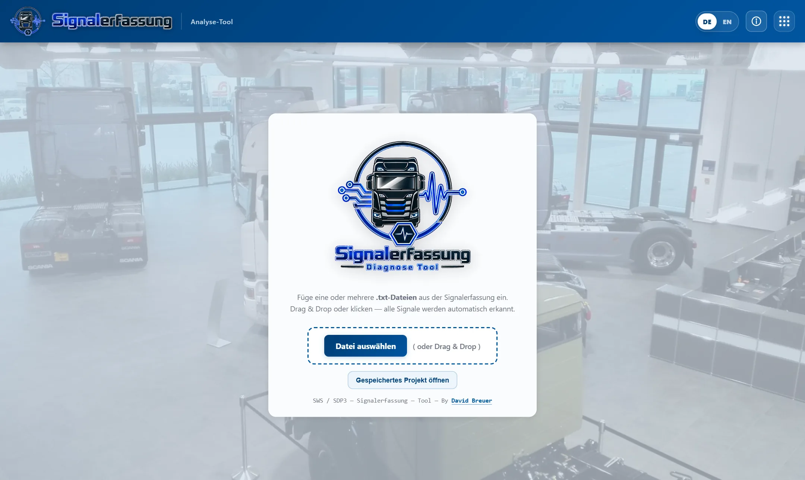
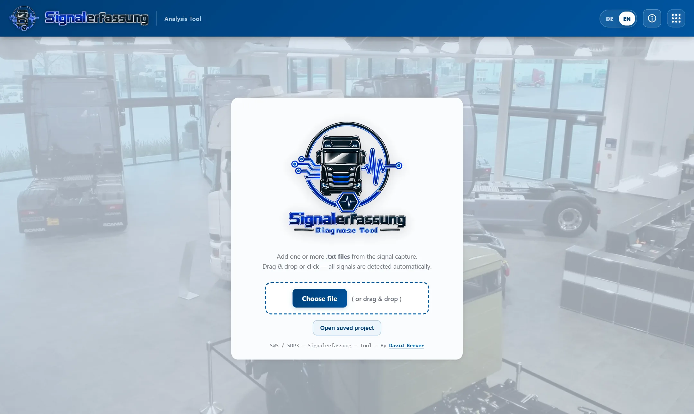
02ArbeitsbereichWorkspace
Nach dem Laden ist der Arbeitsbereich in vier Ebenen aufgebaut:
- Kopfzeile: Projekt speichern/öffnen, Export, Neu, Sprache, Hilfe (i) und Werkstatt-Portale.
- Ansichtsleiste: Tabelle oder Kurvendiagramm, „Erfasste Signale“, „Filter“, „Messdaten“ und der Fokusmodus.
- Werkzeugleiste: alle Werkzeuge für Marker, Zeiträume, Erfassungsmarker, Rückgängig und Notizen (Kapitel 6).
- Analysefläche: Tabelle oder Diagramm, rechts optional die Liste „Notizen & Markierungen“.
Fokusmodus blendet Kopf- und Fußzeile aus und gibt der Analyse den ganzen Bildschirm. Escape führt zurück.
After loading, the workspace has four levels:
- Header: save/open project, export, new, language, help (i) and workshop portals.
- View bar: table or curve chart, "Captured signals", "Filter", "Measurement data" and focus mode.
- Toolbar: every tool for markers, time ranges, capture markers, undo and notes (chapter 6).
- Analysis area: table or chart, optionally the "Notes & markers" list on the right.
Focus mode hides header and footer and gives the analysis the full screen. Escape returns.
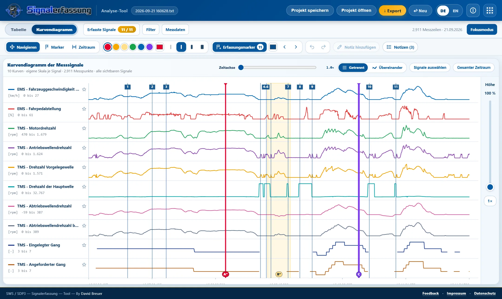
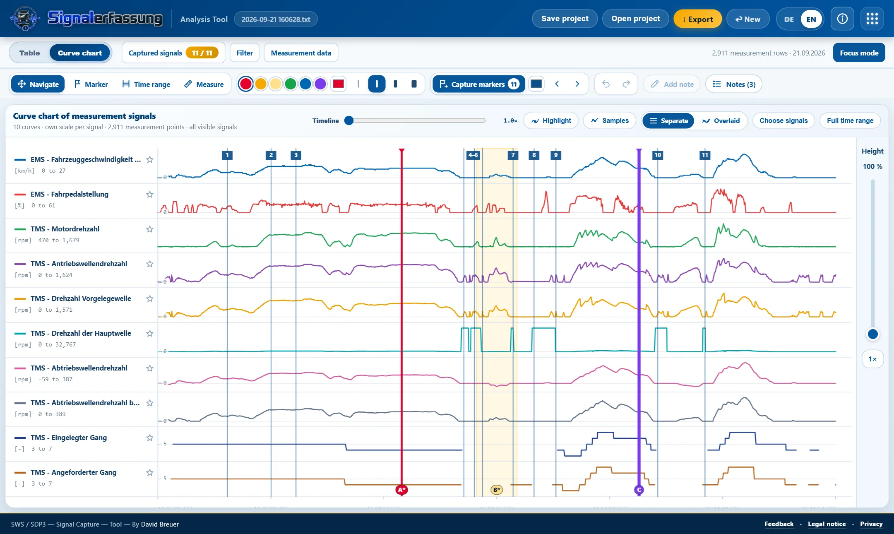
03TabelleTable
Die Tabelle zeigt jede Messzeile mit Zeitstempel und allen sichtbaren Signalen. Auch große Dateien bleiben flüssig, weil nur der sichtbare Teil gezeichnet wird.
- Kreis am Zeitstempel: eigenen Marker setzen oder entfernen.
- Stift: Notiz zu dieser Zeile.
- Nummernkästchen: Erfassungsmarker, also die Zeile, in der der Markerknopf gedrückt wurde.
- Stern / × im Spaltenkopf: Signal hervorheben oder ausblenden. Derselbe Stern sitzt im Diagramm links neben jedem Signalnamen.
- Filter → Zum Marker springt zum nächsten Erfassungsmarker.
The table shows every measurement row with timestamp and all visible signals. Large files stay responsive because only the visible part is drawn.
- Circle at the timestamp: set or remove an own marker.
- Pencil: note for this row.
- Number badge: capture marker, the row where the marker button was pressed.
- Star / × in the column header: highlight or hide a signal. The same star sits next to every signal name in the chart.
- Filter → Jump to marker moves to the next capture marker.
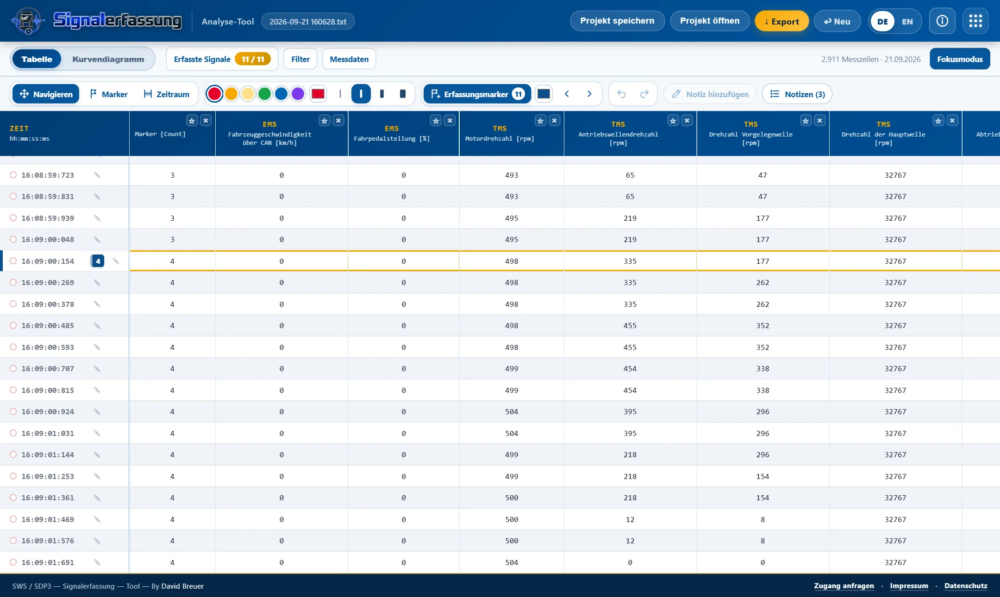
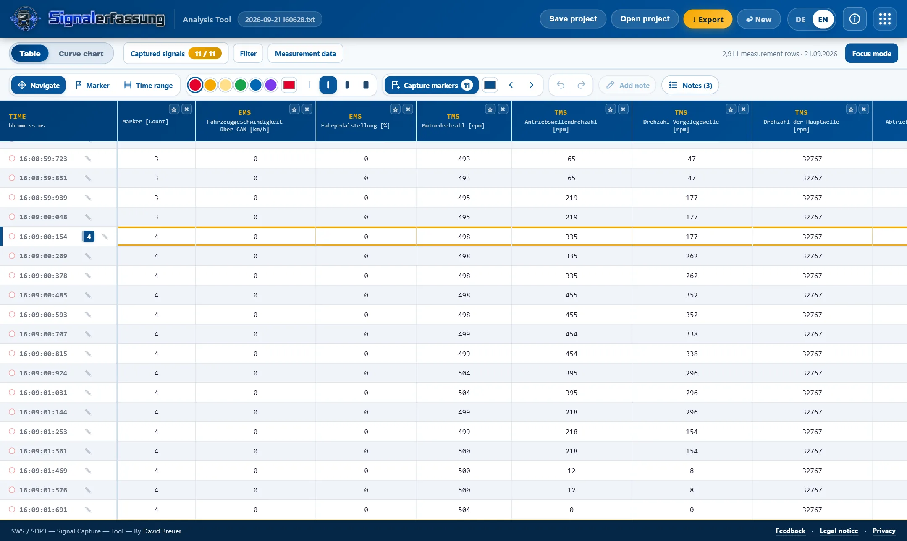
04KurvendiagrammCurve chart
Jedes Signal hat eine eigene Spur mit eigener Skala; Minimum und Maximum stehen links neben der Spur. Die Zeitachse entspricht der echten Messzeit, kurze Spitzen bleiben auch bei großen Dateien sichtbar.
Bedienung
- Zeitachse: Regler oben oder Mausrad (zoomt am Mauszeiger).
- Verschieben: im Werkzeug „Navigieren“ ziehen oder Umschalt + Mausrad.
- Höhe (Y-Achse): Regler rechts ziehen, Mausrad über dem Regler oder Strg + Mausrad im Diagramm. Über den Signalnamen scrollt das Mausrad ein vergrößertes Diagramm hoch und runter.
- Werteanzeige: das dunkle Infofenster zeigt Zeit und alle Werte an der Mausposition, dazu Marker und Notizen. Ist es im Weg, machst du es mit T + Mausrad durchsichtiger (Touchpad: T + Zwei-Finger-Scrollen).
- Gesamter Zeitraum: setzt Zoom und Verschiebung zurück.
Das Diagramm zeigt alle sichtbaren Signale, egal wie viele erfasst wurden – auch Statussignale mit Textwerten wie „Aktiv“ / „Nicht aktiv“, „Bereit“ oder „Elektroantrieb“. Sie erscheinen als Stufenkurve: Jeder Zustand ist eine Stufe, die Zustandsnamen stehen am linken Rand der Spur, und die Werteanzeige zeigt den Text. Zahlensignale haben links eine Werteskala mit feinen Hilfslinien (höhere Spuren = feinere Skala); beim Hineinzoomen erscheint jeder Messwert als Punkt. Jede Spur behält eine gut lesbare Mindesthöhe; passen nicht alle auf den Bildschirm, erreichst du die weiteren Spuren über die Scrollleiste rechts oder das Mausrad über den Signalnamen. Über die Haken in „Signale auswählen“ blendest du einzelne Kurven aus. Der Stern neben dem Signalnamen hebt ein Signal gelb hervor, genau wie der Stern in der Tabelle.
Every signal has its own lane and scale; minimum and maximum are shown left of the lane. The time axis follows the real measurement time, short peaks stay visible even in large files.
Controls
- Time axis: slider at the top or mouse wheel (zooms at the cursor).
- Pan: drag with the "Navigate" tool or Shift + wheel.
- Height (Y axis): drag the slider on the right, use the wheel over the slider or Ctrl + wheel in the chart. Over the signal names the wheel scrolls an enlarged chart up and down.
- Value tooltip: the dark info box shows time and all values at the mouse position plus markers and notes. If it is in the way, make it more transparent with T + wheel (touchpad: T + two-finger scroll).
- Full time range: resets zoom and pan.
The chart shows all visible signals, however many were captured – including status signals with text values such as "Active" / "Not active", "Ready" or "Electric drive". They appear as step curves: each state is one step, the state names are shown on the left edge of the lane, and the value tooltip shows the text. Numeric signals have a value scale with fine grid lines on the left (taller lanes = finer scale); when zoomed in, every measured value is shown as a dot. Every lane keeps a readable minimum height; if they do not all fit on the screen, reach further lanes with the scrollbar on the right or the mouse wheel over the signal names. Untick single curves in "Choose signals" to hide them. The star next to the signal name highlights a signal in yellow, just like the star in the table.
05Signale auswählen & überlagernChoose & overlay signals
Signale auswählen öffnet eine Liste aller Signale mit Suche; Statussignale tragen den Hinweis „Status“. Ein Haken zeigt die Kurve im Diagramm, ohne Haken ist sie ausgeblendet. Tabelle und Sterne bleiben davon unberührt. Alle auswählen / Alle abwählen haken mit einem Klick alle Signale an oder ab – bei aktiver Suche nur die Treffer. So lässt sich z. B. alles abwählen und danach gezielt nur die gewünschten Kurven anhaken. Sind die Kurven übereinandergelegt, werden neu angehakte Signale automatisch mit überlagert.
- Getrennt / Übereinander: legt alle ausgewählten Kurven in eine gemeinsame Spur, ideal zum Vergleichen unterschiedlicher Signale, z. B. Pedal, Drehzahl und Geschwindigkeit.
- Wellen-Symbol je Signal: nur einzelne Kurven überlagern, die übrigen bleiben getrennt.
- Gemeinsame Skala: überlagerte Kurven teilen sich einen Wertebereich mit Achsbeschriftung. Sinnvoll bei gleicher Einheit, z. B. mehreren Drehzahlen.
Choose signals opens a list of all signals with search; status signals are labelled "State". A tick shows the curve in the chart, without a tick it is hidden. Table and stars are not affected. Select all / Deselect all tick or untick every signal with one click – while searching, only the matches. For example, deselect everything and then tick just the curves you need. If the curves are overlaid, newly ticked signals join the overlay automatically.
- Separate / Overlaid: puts all selected curves into one shared lane, ideal to compare different signals such as pedal, engine speed and vehicle speed.
- Wave icon per signal: overlay only single curves, the others stay separate.
- Shared scale: overlaid curves share one value range with axis labels. Useful for the same unit, e.g. several speeds in rpm.
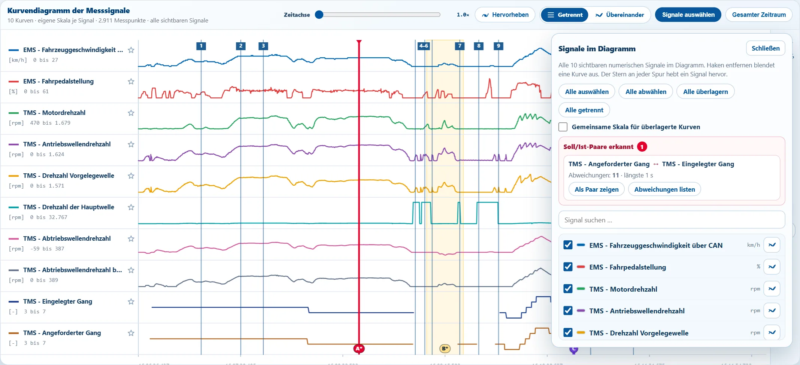
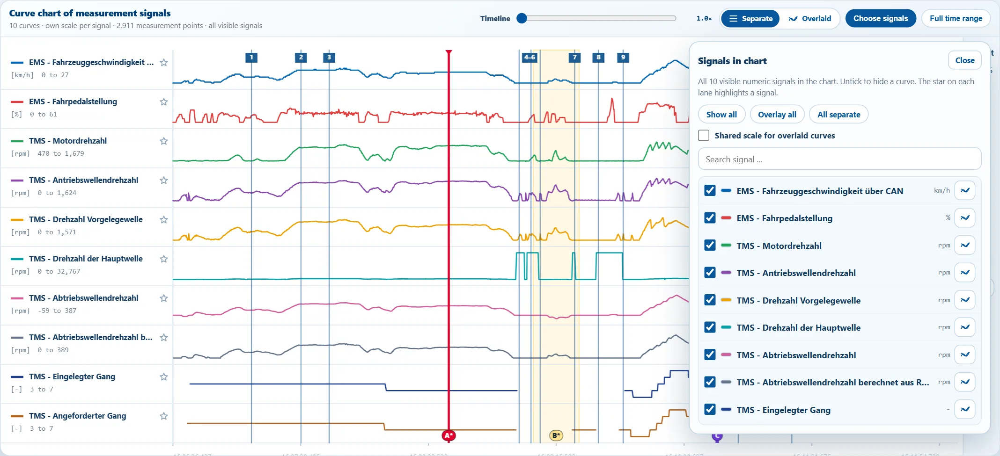
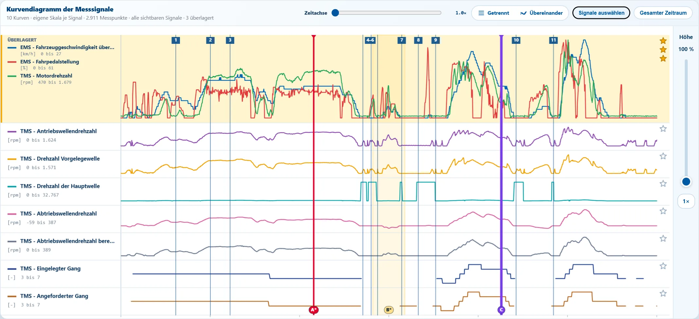
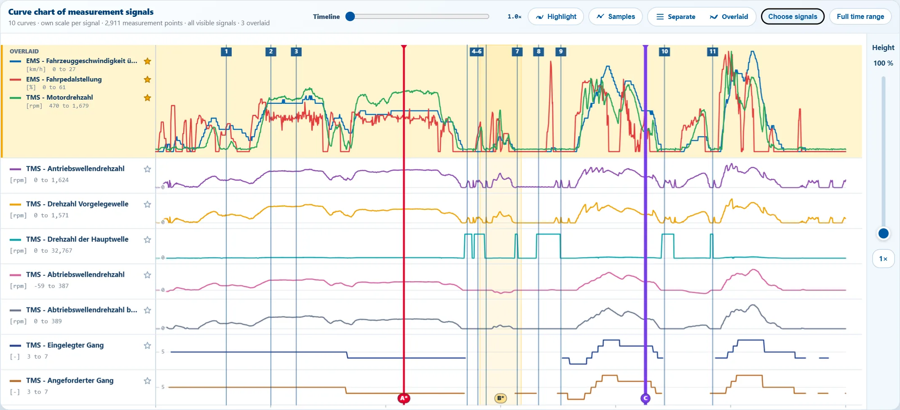
HervorhebenHighlight
Der Knopf Hervorheben im Diagrammkopf schaltet die Funktion ein und aus. Ist er an:
- Maus über einen Signalnamen links: Diese Kurve bleibt kräftig und wird dicker, alle anderen werden blass.
- Klick auf den Namen: hält die Kurve hervorgehoben, auch wenn die Maus weiterwandert. Ein zweiter Klick löst sie wieder.
- Funktioniert in beiden Ansichten, getrennt und übereinander.
Hervorheben ändert nur die Darstellung. Auswahl, Sterne, Projekt und Berichte bleiben unverändert. Ist der Knopf aus, sieht alles aus wie bisher.
The Highlight button in the chart header turns the function on and off. While it is on:
- Mouse over a signal name on the left: that curve stays strong and gets thicker, all others fade.
- Click on the name: keeps the curve highlighted even when the mouse moves on. A second click releases it.
- Works in both views, separate and overlaid.
Highlight only changes the display. Selection, stars, project and reports stay unchanged. With the button off everything looks as before.
Soll/Ist-PaareSetpoint/actual pairs
Das Tool erkennt zusammengehörige Signale am Namen, zum Beispiel Angeforderter Gang ↔ Eingelegter Gang, Requested fuel pressure ↔ Fuel pressure oder Requested torque ↔ Torque – immer vom selben Steuergerät und mit gleicher Einheit. Die erkannten Paare stehen oben in Signale auswählen.
- Als Paar zeigen: beide Kurven kommen in eine eigene Spur mit gemeinsamer Skala, gekennzeichnet mit „SOLL / IST“.
- Rote Bereiche: Soll und Ist liegen länger als die Mindestdauer weiter als die Toleranz auseinander.
- Toleranz und Mindestdauer lassen sich je Paar einstellen. Voreinstellung: ein halber Schritt bei ganzzahligen Signalen wie Gang oder Status, sonst 5 % des Sollwert-Bereichs; Mindestdauer 0,5 s.
- Abweichungen listen: zeigt jede Stelle mit Uhrzeit, Dauer und größter Abweichung. Ein Klick zoomt das Diagramm genau dorthin.
Aktive Paare werden im Projekt gespeichert. Im PDF erscheinen sie im Kurvendiagramm samt roten Bereichen und im Kapitel „Soll/Ist-Abweichungen“.
The tool detects signals that belong together by their name, for example Requested fuel pressure ↔ Fuel pressure, Requested torque ↔ Torque or Angeforderter Gang ↔ Eingelegter Gang – always from the same ECU and with the same unit. The detected pairs are listed at the top of Choose signals.
- Show as pair: both curves get their own lane with a shared scale, labelled "SETPOINT / ACTUAL".
- Red areas: setpoint and actual value differ by more than the tolerance for longer than the minimum duration.
- Tolerance and minimum duration can be set per pair. Default: half a step for whole-number signals such as gear or status, otherwise 5 % of the setpoint range; minimum duration 0.5 s.
- List deviations: shows every spot with time, duration and largest deviation. A click zooms the chart right there.
Active pairs are saved in the project. In the PDF they appear in the curve chart with the red areas and in the chapter "Setpoint/actual deviations".
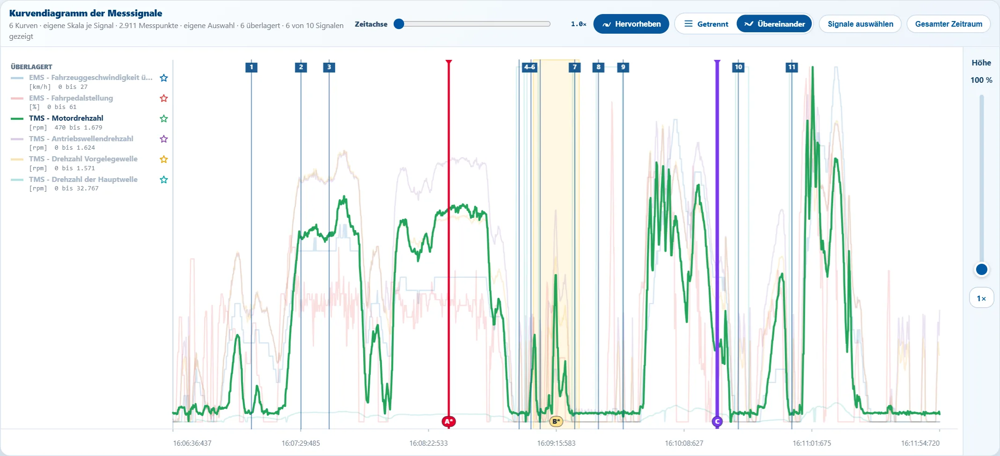
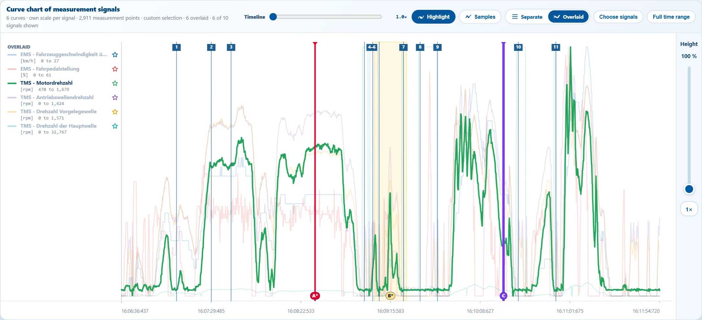
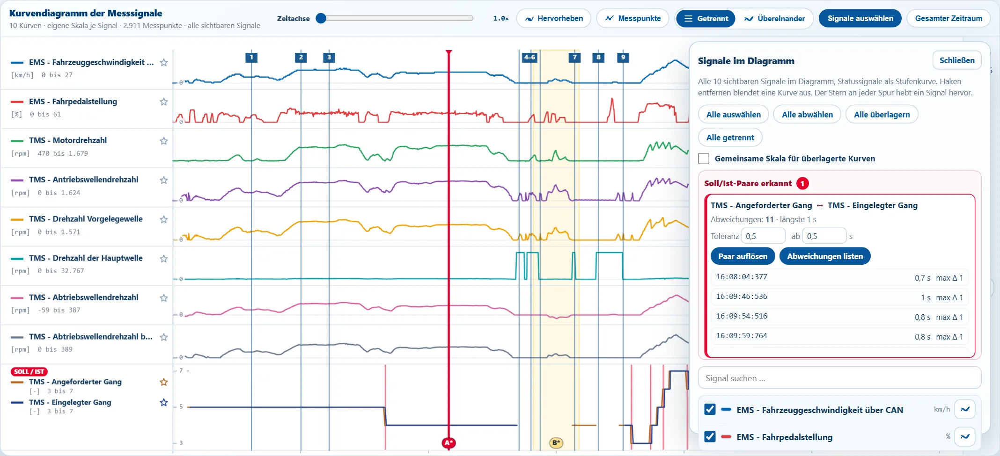
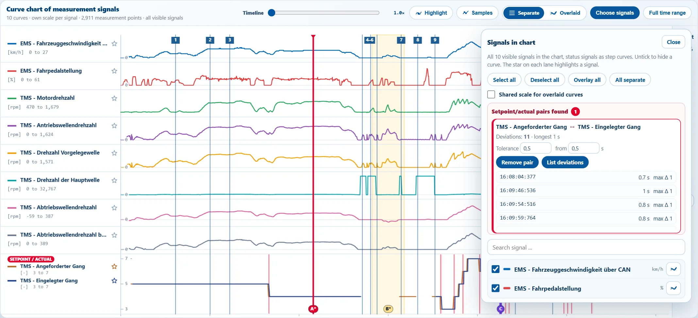
06WerkzeugleisteToolbar
Nachträglich ändern: Im Werkzeug „Navigieren“ einen Marker oder Zeitraum anklicken und dann Farbe oder Dicke wählen. Das ändert genau diese Markierung und lässt sich rückgängig machen.
Change later: With the "Navigate" tool click a marker or range, then pick a colour or width. That changes exactly this marking and can be undone.
Messen mit zwei CursornMeasuring with two cursors
- Werkzeug Messen wählen.
- Erster Klick ins Diagramm setzt Cursor A (blau), der zweite Cursor B (grün). Beide rasten auf Messzeilen ein und lassen sich mit der Maus ziehen.
- Das Fenster Messung A → B zeigt Δt sowie für jede Kurve den Wert an A, an B und die Differenz – grün bei Anstieg, rot bei Abfall. Das Fenster lässt sich an der Titelleiste verschieben.
- Als Notiz übernehmen speichert A–B als markierten Zeitraum mit allen Werten als Notiz. So steht die Messung auch im PDF und in Excel und lässt sich mit Strg+Z rückgängig machen.
- Esc oder „Entfernen“ löscht die Cursor.
Typische Fragen: Wie lange dauert es vom Gaspedal bis zur Drehzahl? Wie schnell baut sich der Druck auf? Wie stark fällt die Drehzahl beim Schalten?
- Choose the Measure tool.
- The first click into the chart sets cursor A (blue), the second cursor B (green). Both snap to measurement rows and can be dragged with the mouse.
- The Measurement A → B panel shows Δt and, for every curve, the value at A, at B and the difference – green when rising, red when falling. Move the panel by its title bar.
- Save as note stores A–B as a marked time range with all values as a note. The measurement then also appears in the PDF and Excel and can be undone with Ctrl+Z.
- Esc or "Remove" deletes the cursors.
Typical questions: how long does it take from the accelerator pedal to engine speed? How fast does pressure build up? How much does engine speed drop during a gear change?
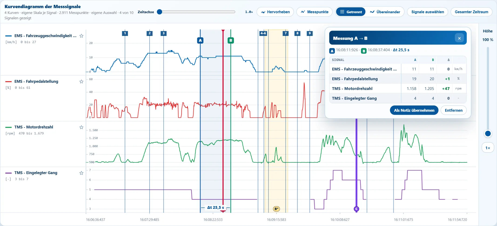
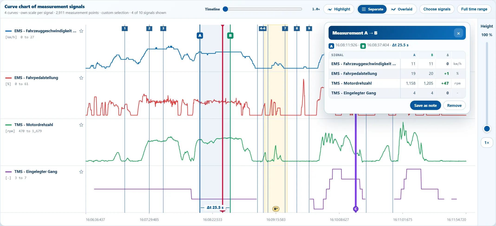
07ErfassungsmarkerCapture markers
Während der Messfahrt kann der Fahrer bei jeder Auffälligkeit den Markerknopf drücken. Die Signalerfassung zählt dabei die Spalte „Marker“ hoch: 0 bis zum ersten Druck, dann 1, 2, 3 und so weiter. Der Wert bleibt bis zum nächsten Druck stehen.
Das Tool erkennt jeden Druck an der Stelle, an der der Zähler steigt, und zeigt ihn als nummerierte Linie im Diagramm und als Nummernkästchen in der Tabelle. Die Zahl im Button „Erfassungsmarker“ zeigt, wie viele Drücke die Datei enthält.
- Button: ein- und ausblenden. Deine eigenen Marker bleiben dabei immer erhalten.
- Farbfeld daneben: Farbe der Erfassungsmarker frei wählen.
- ‹ ›: zum vorherigen oder nächsten Erfassungsmarker springen. Das Diagramm zoomt dafür auf einen passenden Ausschnitt.
Im PDF-Bericht stehen die Messwerte aller Diagrammsignale zu jedem Knopfdruck in einer Tabelle, dazu eine Detailansicht von ±8 Sekunden je Marker.
During the test drive the driver can press the marker button whenever something happens. The signal capture counts the "Marker" column up: 0 until the first press, then 1, 2, 3 and so on. The value stays until the next press.
The tool detects each press where the counter increases and shows it as a numbered line in the chart and a number badge in the table. The number in the "Capture markers" button shows how many presses the file contains.
- Button: show or hide. Your own markers always stay untouched.
- Colour field next to it: choose the colour of the capture markers.
- ‹ ›: jump to the previous or next capture marker. The chart zooms to a suitable section.
The PDF report lists the values of all chart signals at every button press in a table, plus a ±8 second detail view per marker.
08Notizen & MarkierungenNotes & markers
Jede eigene Markierung bekommt einen Buchstaben (A, B, C …). Er steht unten im Diagramm, in der Liste und in allen Berichten. Ein Stern am Buchstaben bedeutet: mit Notiz.
- Messpunkt, Marker oder Zeitraum auswählen.
- „Notiz hinzufügen“ klicken und Beobachtung, vermutete Ursache oder nächsten Prüfschritt eintragen.
- In der Liste „Notizen & Markierungen“ jeden Eintrag anzeigen, bearbeiten, umfärben oder entfernen.
Every own marking gets a letter (A, B, C ...). It appears at the bottom of the chart, in the list and in all reports. An asterisk next to the letter means: with note.
- Select a measurement point, marker or time range.
- Click "Add note" and enter the observation, suspected cause or next test step.
- In the "Notes & markers" list show, edit, recolour or remove every entry.
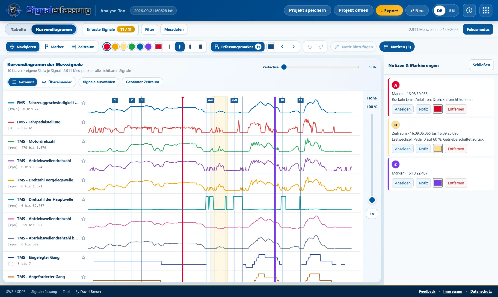
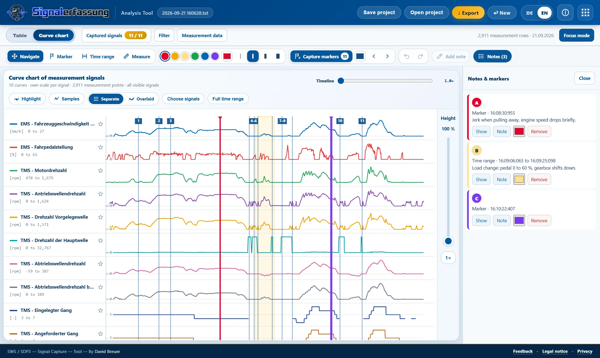
09Rückgängig & TastenkürzelUndo & shortcuts
| Strg + Z | Rückgängig: Marker, Zeiträume, Notizen, Farben, Löschen, Erfassungsmarker ein/aus |
| Strg + Y oder Strg + Umschalt + Z | Wiederholen |
| Esc | Werkzeug beenden, Menüs, Hilfe und Fokusmodus schließen |
| Mausrad | Zeitachse am Mauszeiger zoomen |
| Umschalt + Mausrad | Zeitachse verschieben |
| Strg + Mausrad | Spurhöhe (Y-Achse) ändern |
| Mausrad über „Höhe“ | Spurhöhe (Y-Achse) ändern |
| Mausrad über den Signalnamen | vergrößertes Diagramm hoch und runter scrollen |
| T + Mausrad Touchpad: T halten + zwei Finger scrollen | Transparenz der Werteanzeige (dunkles Infofenster mit allen Werten) in 10-%-Schritten; die Einstellung bleibt gespeichert |
| Ctrl + Z | Undo: markers, ranges, notes, colours, deletions, capture markers on/off |
| Ctrl + Y or Ctrl + Shift + Z | Redo |
| Esc | Leave tool, close menus, help and focus mode |
| Mouse wheel | Zoom the time axis at the cursor |
| Shift + wheel | Pan the time axis |
| Ctrl + wheel | Change lane height (Y axis) |
| Wheel over "Height" | Change lane height (Y axis) |
| Wheel over the signal names | Scroll an enlarged chart up and down |
| T + wheel Touchpad: hold T + two-finger scroll | Transparency of the value tooltip (dark info box with all values) in 10 % steps; the setting is remembered |
In Eingabefeldern wie dem Notizfeld wirkt Strg+Z wie gewohnt auf den Text, nicht auf die Markierungen.
In input fields such as the note field Ctrl+Z works on the text as usual, not on the markings.
10ProjekteProjects
„Projekt speichern“ sichert den kompletten Arbeitsstand als .signalprojekt: Originalmessungen, Filter, sichtbare, markierte und überlagerte Signale, eigene Marker mit Farbe und Dicke, Zeiträume, Notizen sowie Farbe und Sichtbarkeit der Erfassungsmarker. „Projekt öffnen“ stellt alles wieder her. Ältere Projekte werden automatisch übernommen.
Ungespeicherte Änderungen werden vor „Neu“, dem Öffnen eines Projekts oder dem Schließen einer Datei abgefragt.
"Save project" stores the complete workspace as .signalprojekt: original measurements, filters, visible, starred and overlaid signals, own markers with colour and width, time ranges, notes and the colour and visibility of capture markers. "Open project" restores everything. Older projects are converted automatically.
You are asked about unsaved changes before "New", opening a project or closing a file.
11Export & BerichtExport & report
Der gelbe Export-Button erstellt eine von drei Auswertungen. Alle Teile entstehen aus demselben eingefrorenen Arbeitsstand und lokal im Browser.
PDF-Auswertung (Diagnosebericht)
- Zusammenfassung mit Kennzahlen, Messdaten und Inhaltsverzeichnis
- Kurvendiagramm über den gesamten Zeitraum in voller Seitenbreite und unverzerrt, dazu der aktuelle Ausschnitt, falls gezoomt
- Eine Detailseite je markiertem Zeitraum oder Marker mit Notiz
- Erfassungsmarker: Messwerte zu jedem Knopfdruck und Detailansichten (±8 s)
- Notizen & Markierungen, Signalstatistik (Min, Max, Mittelwert), Signalübersicht
- Messdatenauszug an allen Markern sowie Anfang und Ende der Zeiträume
PDF-Bericht anpassen
Vor dem Erstellen öffnet sich das Fenster PDF-Bericht anpassen. Jedes Kapitel lässt sich an- oder abhaken, rechts steht die geschätzte Seitenzahl, unten die Summe. Die Zusammenfassung ist immer enthalten, nicht vorhandene Kapitel (z. B. ohne Markierungen) sind ausgegraut. Mit Auswahl merken gilt die Wahl auch für die nächsten Berichte; ohne Änderung ist der Bericht vollständig. Bei mehreren Messungen gilt die Auswahl für jede Messung. Das Support-ZIP enthält immer den vollständigen Bericht.
Excel-Auswertung
Blätter „Übersicht“, „Signale“ (mit Min/Max/Mittelwert), „Messdaten“ (alle Zeilen, Marker farbig, Spalte „Markierung / Notiz“), „Markierungen“, „Diagramm“, „Erfassungsmarker“ und „Notizen und Zeitbereiche“.
Support-ZIP
Originaldateien, PDF, Excel, Kurvendiagramm als Bild (gesamt und Ausschnitt), Projektdatei und README, alles in einem Paket für den Support.
Mehrere Messungen
Sind mehrere .txt-Dateien geladen, erscheint oben im Export-Menü die Auswahl Umfang:
- Alle Dateien (Voreinstellung): ein gemeinsamer PDF-Bericht mit Deckblatt, Vergleichstabelle aller Messungen und je Messung einem eigenen Kapitel samt Inhaltsverzeichnis; in Excel eine Arbeitsmappe mit dem Blatt „Messungen“ und nummerierten Blättern je Datei („1 Messdaten“, „2 Messdaten“ …).
- Nur diese Datei: Export der gerade aktiven Messung wie bisher.
- Das Support-ZIP enthält immer alle Messungen: Originale, gemeinsamen PDF-Bericht, eine Excel-Datei und Diagrammbilder je Messung.
The yellow Export button creates one of three evaluations. All parts come from the same frozen workspace state and are created locally in the browser.
PDF evaluation (diagnostic report)
- Summary with key figures, measurement data and contents
- Curve chart for the full time range at full page width and undistorted, plus the current view if zoomed
- One detail page per marked range or marker with note
- Capture markers: values at every button press and detail views (±8 s)
- Notes & markers, signal statistics (min, max, mean), signal overview
- Measurement excerpt at all markers and at the start and end of ranges
Customize PDF report
Before the PDF is created, the Customize PDF report window opens. Every chapter can be ticked or unticked, the estimated page count is shown on the right and the total at the bottom. The summary is always included; chapters that do not exist (e.g. without markings) are greyed out. With Remember this choice it also applies to the next reports; without changes the report is complete. With several recordings the choice applies to each one. The support ZIP always contains the complete report.
Excel evaluation
Sheets "Overview", "Signals" (with min/max/mean), "Measurement data" (all rows, markers coloured, column "Marking / note"), "Markers", "Chart", "Capture markers" and "Notes and time ranges".
Support ZIP
Original files, PDF, Excel, curve chart as image (full range and view), project file and README, all in one package for support.
Several recordings
With more than one .txt file loaded, the export menu shows a Scope switch at the top:
- All files (default): one combined PDF report with a cover, a comparison table of all recordings and one chapter per recording with its own contents; in Excel one workbook with the sheet "Recordings" and numbered sheets per file ("1 Measurement data", "2 Measurement data" ...).
- This file only: exports the active recording as before.
- The support ZIP always contains every recording: originals, combined PDF report, one Excel file and chart images per recording.
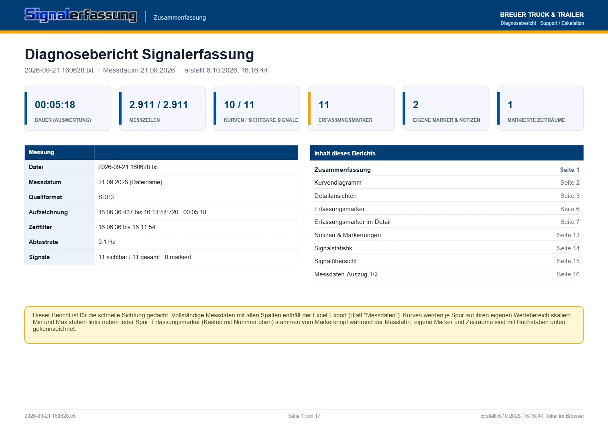
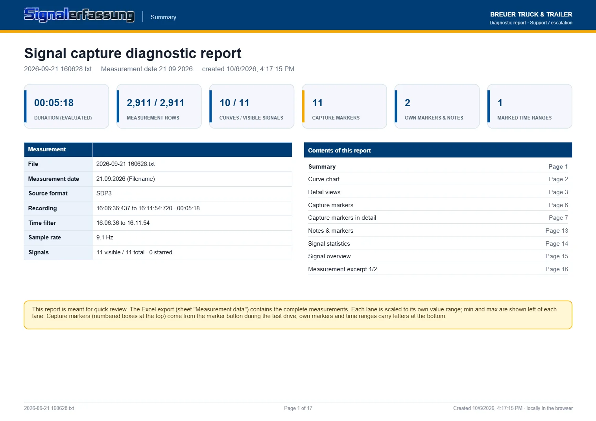
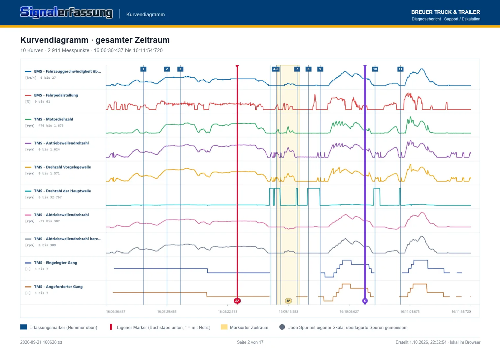
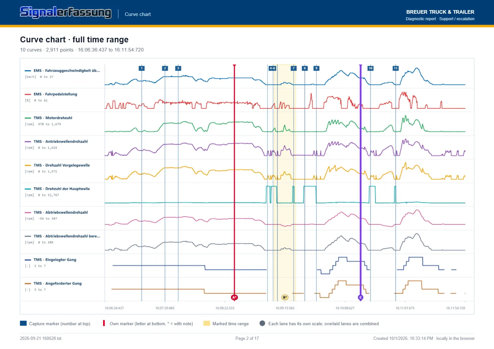
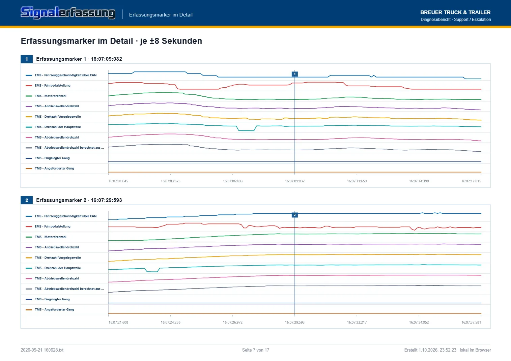
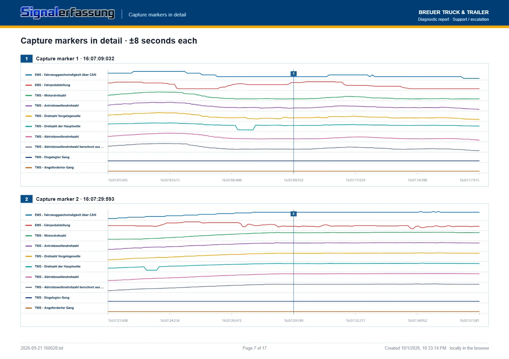
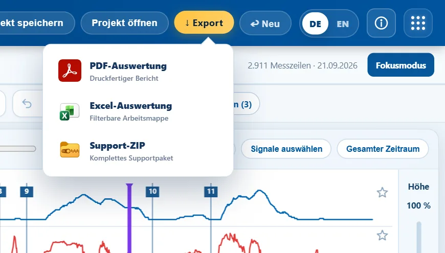
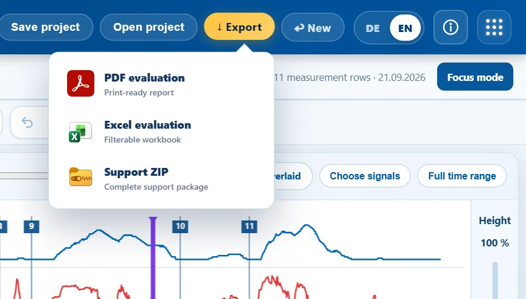
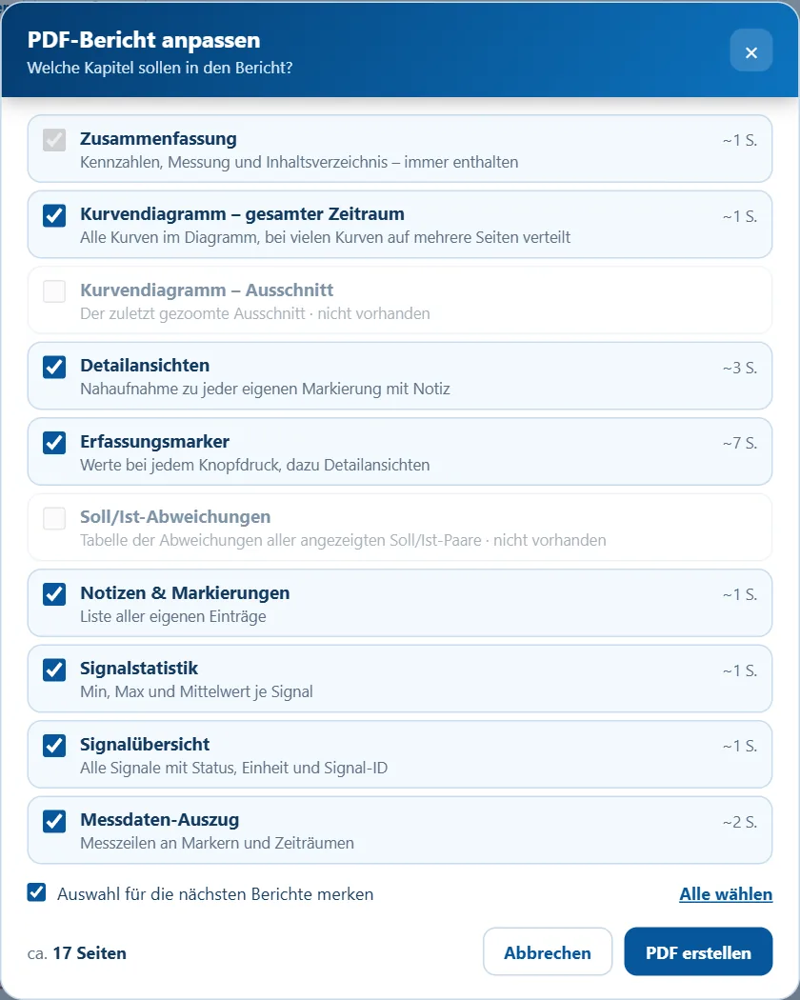
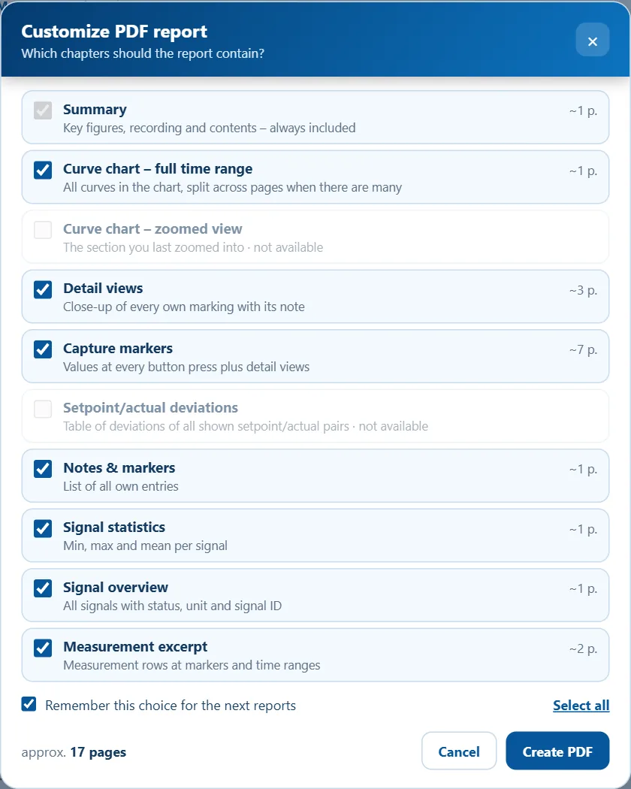
12Hilfe in der AppIn-app help
Das i in der Kopfzeile öffnet die Kurzhilfe direkt beim passenden Thema, mit Suche und einem Link zu diesem Handbuch.
The i in the header opens the short help directly at the matching topic, with search and a link to this manual.
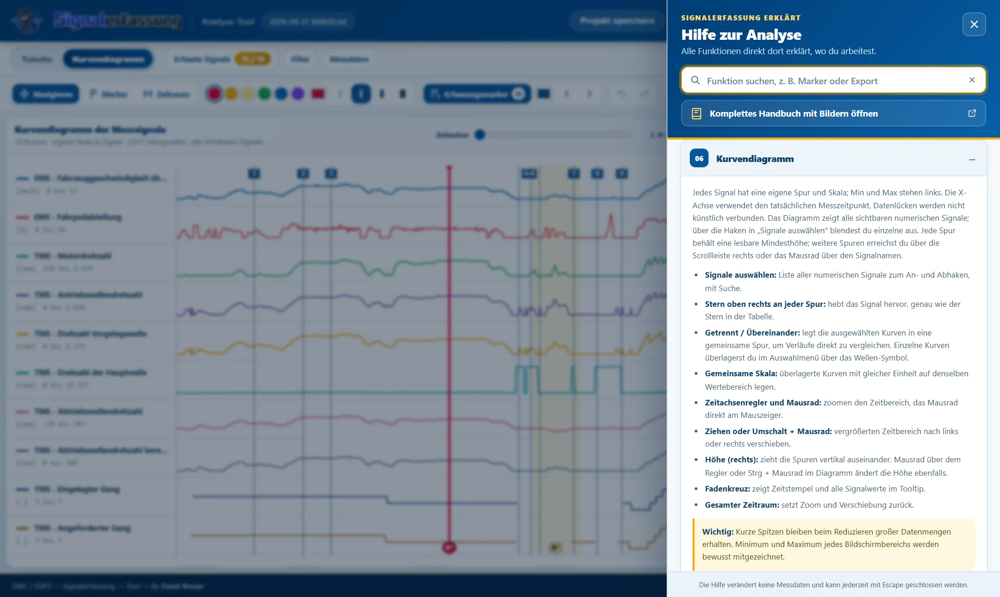
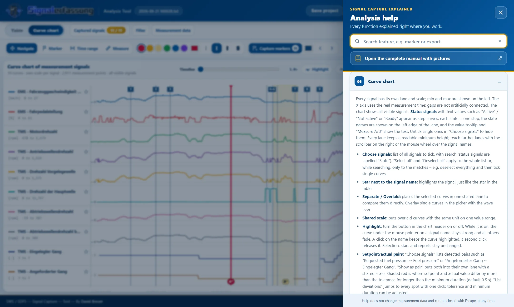
13Datenschutz & lokale VerarbeitungPrivacy & local processing
Messdateien werden ausschließlich im Browser verarbeitet und nicht hochgeladen. PDF, Excel, Bilder, Projekt und Support-ZIP entstehen auf deinem Gerät. Der Server verwaltet nur den Zugang und eine reduzierte Nutzungsstatistik. Details: Datenschutz · Impressum.
Measurement files are processed only in the browser and are never uploaded. PDF, Excel, images, project and support ZIP are created on your device. The server only manages access and reduced usage statistics. Details: Privacy · Legal notice.